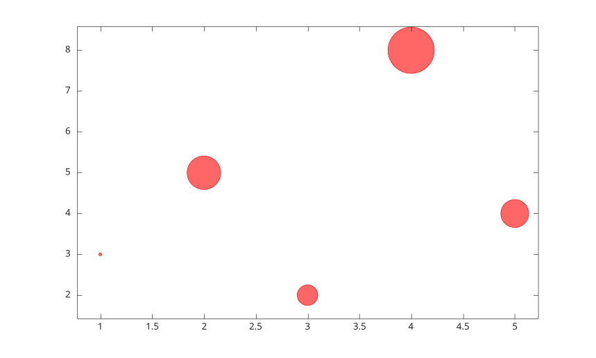
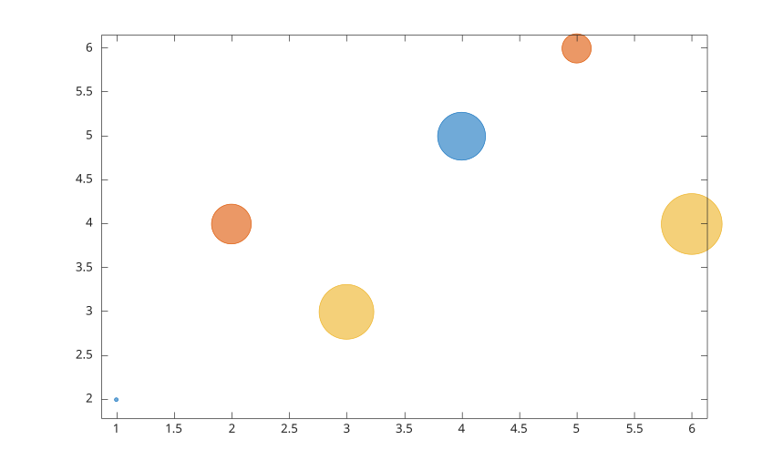
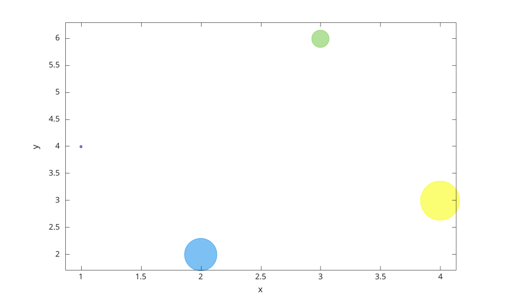

bubblechart(x, y, sz)
bubblechart(x, y, sz, c)
bubblechart(tbl, xvar, yvar, sizevar)
bubblechart(tbl, xvar, yvar, sizevar, cvar)
bubblechart(parent, ...)
bubblechart(..., propertyName, propertyValue)
h = bubblechart(...)
bubblechart displays a chart whose circular marker sizes are controlled by sz.
x, y, and sz can be vectors or matrices. Vector x and y with scalar sz create one bubblechart object per point. Matrix inputs create one object per data series.
c specifies bubble colors. It can be a color name, short color name, RGB triplet, color vector, or RGB matrix.
Table syntax reads variables from tbl. Variable selectors can be names, string arrays, cell arrays of names, numeric indices, or logical vectors.
See bubblechart properties for the complete property list.
bubblechart(1:5, [3 5 2 8 4], [20 50 30 80 40], 'BubbleColor', 'r');
x = [1 2 3; 4 5 6];
y = [2 4 3; 5 6 4];
sz = [20 40 60; 50 30 70];
bubblechart(x, y, sz);
t = table((1:4)', [4; 2; 6; 3], [20; 60; 30; 80], [1; 2; 3; 4], ...
'VariableNames', {'x', 'y', 's', 'c'});
bubblechart(t, 'x', 'y', 's', 'c');